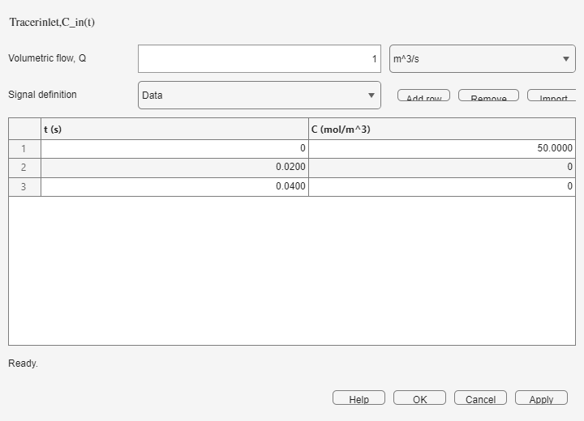

The source resamples the inlet concentration on the coordinator grid and starts the accumulated path RTD. Use a piecewise function for designed injections or a table for measured data.
Confirm the constant volumetric flow Q and the time and concentration units of the source record. The source must cover the portion of the common grid needed to describe the injection.

Piecewise definitions are useful for steps, finite pulses, ramps, and planned plant tests. Put every discontinuity explicitly in the definition.
| Symptom | What to do |
|---|---|
| Imported data are rejected | Remove missing values and duplicate or decreasing time rows. |
| The injection is not resolved | Reduce the coordinator time step or provide more source points around the peak. |
| The response scale is unexpected | Check concentration and volumetric-flow units before applying. |